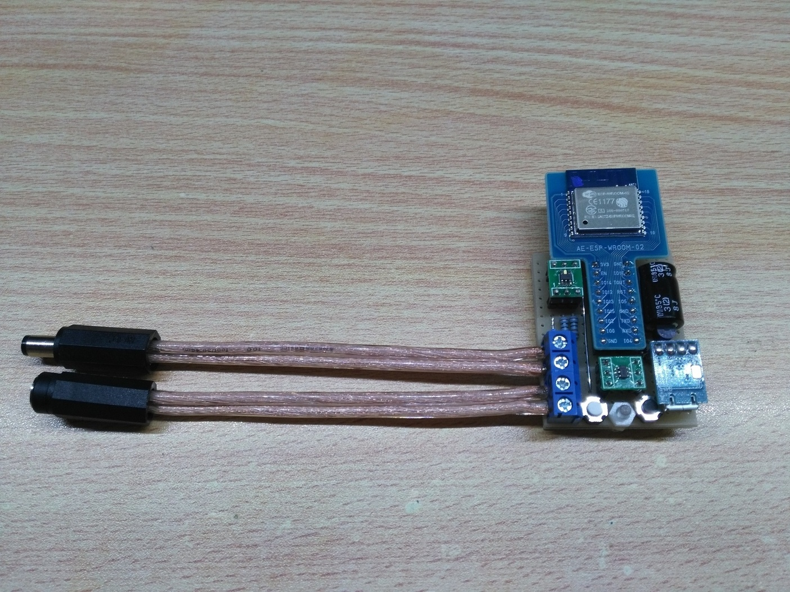
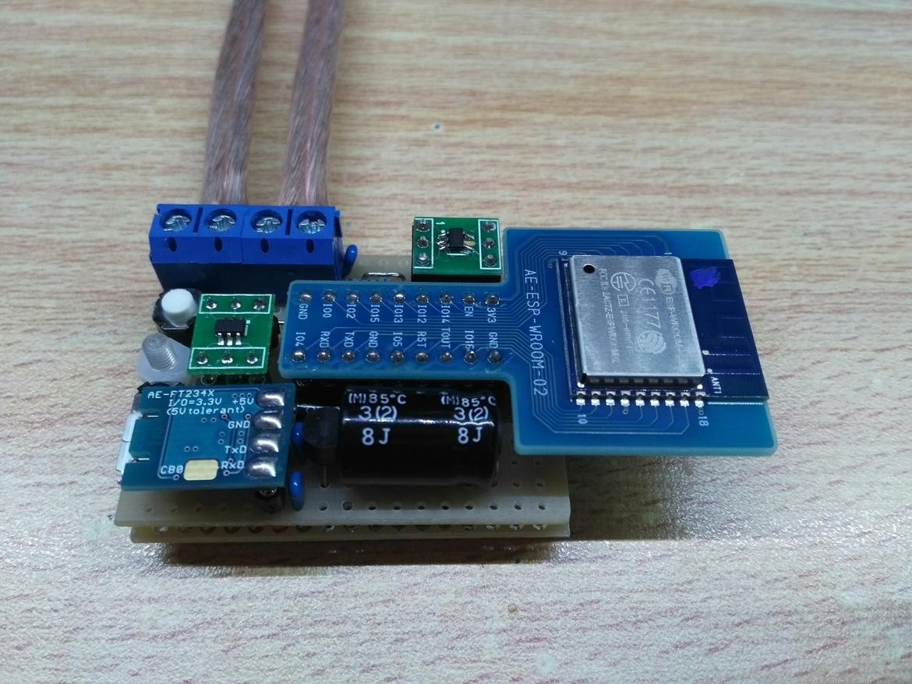
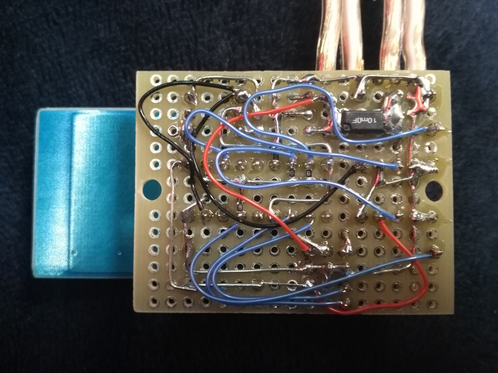
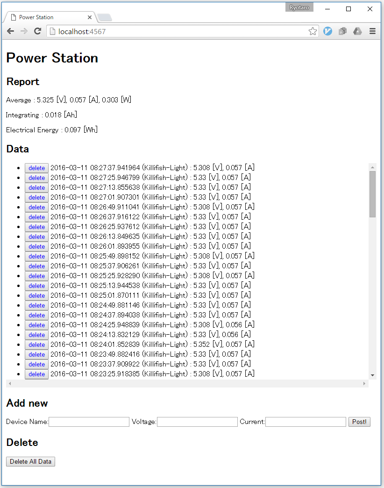

ESP-WROOM-02による中継型電力計
Tweet
概要
話題のESP-WROOM-02
ESP8266という高性能マイコンを積んだ話題のESP-WROOM-02モジュール。
今回はこれを使って中継型電力計を作りました。

中継型とは
電源端子としてよく使われてるDCジャックに中継するだけで、そこから電力をもらいつつ電力を計測します。
WiFi経由でサーバーへ
測定した電力データはWiFiを使って任意のサーバーに送ることができます。
ギャラリー
  
電力の計測方法
電圧の計測
電圧の測定には、ESP8266内蔵のADCを使います。精度はあまり期待できませんが十分使えます。
電流の計測
電流の計測には、精密抵抗とオペアンプ、シリアルADCを使用します。
精密抵抗
内部抵抗を小さくするため、10mΩの精密抵抗を使います。精度は1%です。
ハイサイド電流計測用オペアンプ LT6106
電流を計る対象の＋側で電流を計ることができるので、GNDを共通にすることができます。精度もかなり高いオペアンプです。
超高精度ADコンバータ MCP3425
16bitの分解能があります。さらに内蔵の基準電圧2.048Vは精度0.05%です！
回路図
{kind=link}
ソースファイル
#include <ESP8266WiFi.h>
#include <Wire.h>
#define MCP3245_ADDRESS 0b1101000
const char* ssid = "your_ssid";
const char* password = "your_password";
// server detail
const char* host = "192.168.11.13";
const int port = 4567;
const String deviceName = "Killifish-Light";
WiFiClient client;
void setup() {
ESP.wdtFeed();
Serial.begin(115200);
Serial.println("");
Serial.println("Hello, I'm ESP8266.");
Serial.println("");
// We start by connecting to a WiFi network
Serial.print("Connecting to ");
Serial.println(ssid);
WiFi.begin(ssid, password);
while (WiFi.status() != WL_CONNECTED) {
delay(500);
Serial.print(".");
}
Serial.println("");
Serial.println("WiFi connected");
Serial.println("IP address: ");
Serial.println(WiFi.localIP());
Wire.begin(2, 14);
Wire.beginTransmission(MCP3245_ADDRESS);
Wire.write(0b00011010);
Wire.endTransmission();
Serial.print("connecting to ");
Serial.println(host);
if (!client.connect(host, port)) {
Serial.println("connection failed");
return;
}
Serial.println("Ready");
}
void loop() {
ESP.wdtFeed();
static uint32_t prev_ms;
uint32_t ms = millis();
if (ms > prev_ms + 12000) {
prev_ms = ms;
String currentValue;
String voltageValue;
Wire.requestFrom(MCP3245_ADDRESS, 3);
if (Wire.available() >= 3) {
ESP.wdtFeed();
byte higher = Wire.read();
byte lower = Wire.read();
byte conf = Wire.read();
uint16_t data = (uint16_t)((higher << 8) | lower);
currentValue = String((double)data * 2048 / 32768 / 400, 3);
}
int v = analogRead(A0);
voltageValue = String((double)v * 104.7 / 4.7 / 1024, 3);
Serial.print("MCP3245: ");
Serial.print(currentValue);
Serial.print(" A\t");
Serial.print("Config-ADC: ");
Serial.println(conf, HEX);
Serial.print("ESP8266: ");
Serial.print(voltageValue);
Serial.println(" V");
Serial.print("connecting to ");
Serial.println(host);
if (!client.connect(host, port)) {
Serial.println("connection failed");
return;
}
client.println("GET /new?deviceName=" + deviceName + "¤tValue=" + currentValue + "&voltageValue=" + voltageValue + " HTTP/1.1");
delay(1);
while (client.available()) {
String line = client.readStringUntil('\r');
Serial.print(line);
}
client.stop();
}
}サーバーでの表示
このサーバーについてはこの記事で紹介しています。

まとめ
最近はサーバーのことばかりやっていたので、久々にクライアントを作りました。
ESP8266はなんでもできる素晴らしいマイコンだと思います！どんどん使っていきましょう。
次の記事
電力つぶやきbot
前の記事